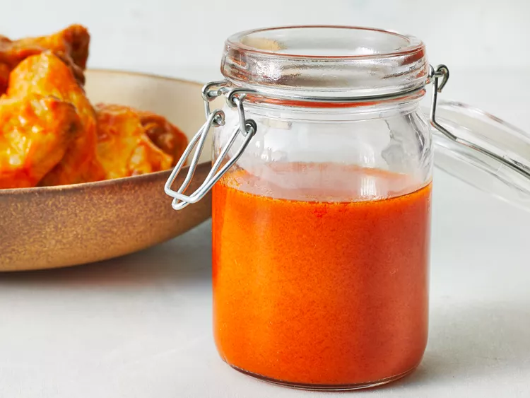

Buffalo Chicken Wing Sauce

Description
If you know someone from Buffalo, they know someone who told them the secret ingredients to the Anchor Bar's famous Buffalo chicken wings. I know people from Buffalo. This is my version of Buffalo sauce, as described to me many years ago, over almost as many beers.
Ingredients
- Hot sauce
- Butter
- Vinegar
- Worcestershire Sauce
- Cayenne
- Garlic Powder
Directions
- Gather all ingredients
- Combine hot sauce, butter, vinegar, Worcestershire sauce, cayenne, garlic powder, and salt in a pot over medium heat. Bring to a simmer while stirring with a whisk.
- As soon as the liquid begins to bubble on the sides of the pot, remove from heat, stir with the whisk, and set aside for use.
- Enjoy!